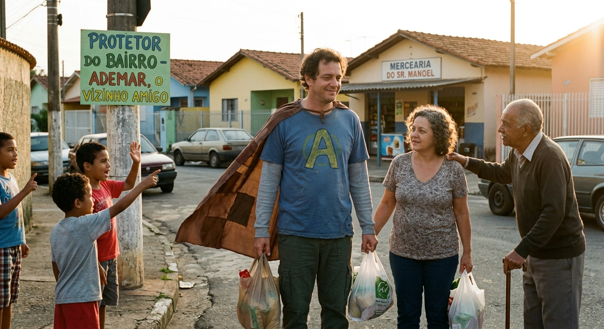

Os pombos mutantes chegam no shopping Ademar se desespera e com sua asas de urubu começa a fugir dos pombos voando pelo shopping, Ele desesperado entra na loja da nike e começa a chutar bolas nos pombos que estavam entrando mas os pombos não estavam morrendo então ele com seus poderes de cobra começa a trocar de pele, e se transforma em uma aranha, Em sua forma de aranha ele cria uma teia que faz com que os pombo fiquem presos entao ele troca de pele dnv mas agora na forma de morcego ele vai até o estacionamento.
No estacionamento Ademar entra em um gol quadrado e liga o carro, mas o carro não funciona então ele sai do carro, e no final do corredor ele avista seu inimigo o urubu alfa. O urubu alfa esta com raiva pois seus primos pombos ficaram pelados pois eles tiveram que sair da teia do Ademar e ficaram sem pernas, enão Ademar se transforma em sua forma final definitiva o urubu alado do japão e invoca katana flamejante fogante queimada, e começa a matar todos os pombos que vinham na sua direção apenas com um movimento.
Então após ver todos seus primos mortos O urubu alfa desbloquia sua forma final, a forma vingativa verdadeira, e vira um urubu vermelho com preto listrados e joga bola, e então ele começa a bater no Adermar, e Ademar revida cortando suas asas e arrancando seu braço esquerdo. Mas com sua forma verdadeira jogador bola final O urubu alfa regenera todo o seu braço até o cotovelo.É então ele prepara seu ataque mais poderodo é então...
Proximo capitulo...